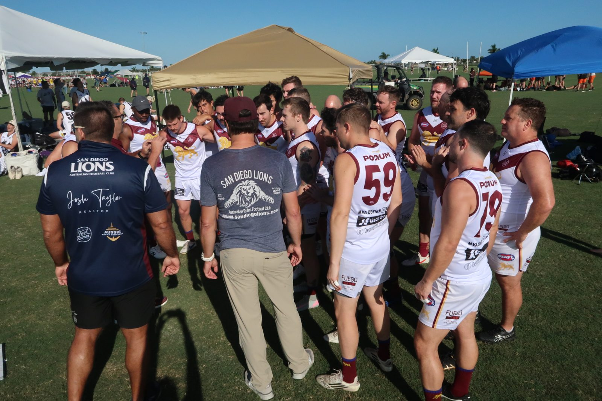

President
Brendan Heussler
A four-time board veteran and the club’s primary ruckman, Brendan’s focus is “solely on the success of the club — on the field and off,” building on the 2024 season.
Behind the scenes
The volunteers who keep the Lions running — on the field and off it.
A four-time board veteran and the club’s primary ruckman, Brendan’s focus is “solely on the success of the club — on the field and off,” building on the 2024 season.
A seven-year full forward in his second year on the board, Lukas is “excited for one final crack at winning another National title with the Lions.”
An Australian expat and former Lions winger, Seb “bridges the gap between traditional Australian Rules Football and the emerging San Diego footy scene.”
From Perth, with WAFL experience at Swan Districts, Paul is “dedicated to nurturing new talent and onboarding passionate players to the game of Aussie Rules.”
A San Diego local, Dwight joined in 2024 with no prior footy experience and went to Nationals in Austin. Now he’s focused on “getting as many new members as possible.”
A Lion since 2021, originally from Kent, England, Edward plays midfield and wants “an incredible club culture based on togetherness, engagement, and enjoyment on and off the field.”
The board’s first female member, Kenzi is eager to establish a women’s side for the club.
A SoCal native who’s been playing since 2010, Puke joined the Lions in 2022. In his first board year, he’s eager to help the club grow on and off the field.
Get involved
Interested in helping run the Lions? Reach out and introduce yourself.
